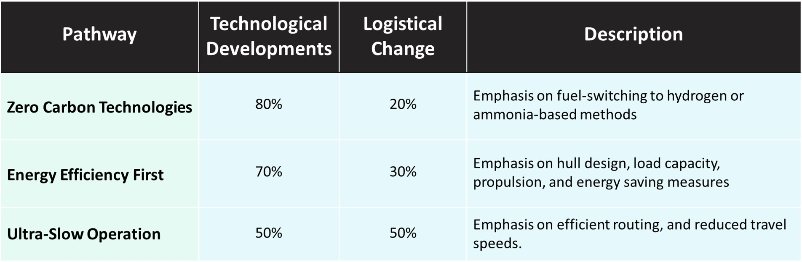

As of 2021, shipping accounted for around 9% of transport emissions worldwide, equating to roughly 3% of global greenhouse gas (GHG) emissions. Although this number may not initially seem very large, if other sectors decarbonise in alignment with net-zero by 2050 while shipping continues along its business-as-usual pathway, it is expected that the shipping sector may constitute up to 17% of total GHG emissions by 2050. It may seem like an unfair assumption to assume decarbonisation of seemingly everything other than shipping, however, this is unfortunately all too close, if not slightly optimistic, as to what we have been observing. With the average lifetime of most fleets being between 25-30 years, companies already need to make tough choices regarding technology lock-in. For every day that the move towards cleaner and more efficient forms of shipping is delayed, the larger costs for firms, consumers, and the planet become.
The coupled challenge of regulatory uncertainty and lack of zero carbon solutions has made it particularly difficult for firms to take meaningful action. While the International Maritime Organisation (IMO) pledged in 2018 to reduce emissions of the sector by 50% by 2050, the European Commission stressed that this wasn’t enough; arguing for at least a 90% reduction in emissions to be in alignment with current climate target. the International Renewable Energy Agency (IRENA) is pushing even harder, arguing that a 100% decarbonised sector is needed to have a chance to reach the 1.5C target. Although at the current trajectory, it seems unlikely that IRENA’s target would be hit without a significant amount of stranded assets.
Fortunately, we have seen some technological advancements in recent years, kindling some much-needed hope for the sector. In January of this year, the first ammonia-ready oil tanker, Kriti Future, was delivered to Greece and has been sailing the Suez Canal since February. Norway has recently been upgrading its domestic ferry fleet, and is estimated to have 72 electric ferries by the end of 2022. Other technological developments into hull design, routing, propulsion, and many more are also currently in development; looking for ways to improve the efficiency of existing and future fleets.
With many technologies still being in their infancy, and the regulatory goal-post constantly moving, firms are put in a difficult position. Over committing to tackle climate change at this stage may result in a large dent to the company’s bottom line, where they invest heavily into expensive technologies which may not be required to reach their emission targets, or even worse, not an acceptable means to reach their target. The associated running or financing costs may put the company at a disadvantage to their competitors, especially as the price of these technologies comes down in the near to medium term. Similarly, taking no action means that a company will face the risk of stranded assets if regulation were to deem their vessels to no longer be compliant with regulation. In short, this means that firms are stuck between a rock and a hard place, where they are being squeezed into choosing between two choices which may lead them to bankruptcy. As far as potential decarbonisation pathways, there seem to be three main pathways, which will be discussed below.
In 2017 (Bouman et al. 2017) conducted a meta study on the potential GHG reductions based on available technology. The study came to the conclusion that from a technical perspective, the shipping sector could reduce its emissions up to 75% by implementing currently available technologies. Potentially more revealing, he highlighted the most promising avenues for emission reductions. The reduction methods can roughly be classified into two classes: logistical changes (pertaining to vessel operations), and technological changes (pertaining to physical properties of the vessel). Although technological improvements in hull design, load capacity, and propulsion methods cover the three largest potential reduction avenues, these improvements will need to be coupled with logistical improvements even to reach the IMO’s pledge. By analysing these different methods, we can broadly group them together to three potential pathways which reflect the general discourse in the literature.

Prioritisation on fuel-switching to hydrogen, ammonia, and other renewable energy sources. The only transition pathway which can result in 100% decarbonisation of scope 1 and 2 emissions. In this scenario, ammonia and ammonia-ready vessels will replace existing heavy fuel oil as a cleaner fuel. Additionally, electric vessels may be used for shorter & domestic journeys, and ships may be fitted with sails to utilise the power of the wind. The overall goal is to reduce the direct emissions through technological advancements and updating the existing fleet. Although there is some scope for retrofitting existing vessels, majority of the improvements would be made based on vessel design. Consequently, unless we see an almost instant uptake of these new technologies, this pathway would undoubtedly lead to a significant amount of stranded assets. Given the current political climate and uncertainty surrounding the legislation, it would be unlikely that the global maritime shipping industry would move in this direction.
Rather than focusing on immediately jumping ship to newer technologies, emphasis is placed on fuel-saving measures, getting the low-hanging fruit before moving towards net-zero technologies in the longer term. Due to fleets having a lifetime of 25-30 years, we are rapidly approaching a point where it would be impossible to achieve net-zero by 2050 without the industry facing significant stranded assets. The energy efficiency first narrative focuses on retrofitting and making adjustments to the current fleet, doing what that can in the near term. In the longer term, as technologies mature and there becomes more regulatory certainty, then we would see an uptake in technological advancements.
From the perspective of a shipping industry, this allows for hedging for regulatory risk in the near term, while still waiting for more certainty in the policy space before heavily investing into new technologies. However, this may leave us with a chicken-and-the-egg situation if strong and enforceable regulation is not in play, as it is unlikely that a company would want to act as the first mover in the international maritime shipping space in the current economic climate.
Finally, there have been discussions surrounding an ultra-slow operations pathway. This is where energy efficiency measures are heavily prioritised to the extent that operational speeds are significantly cut in order to maximise the energy efficiency of vessels. Although this would allow for an almost immediate reduction in emissions without upgrading or retrofitting the fleet in the short term, it also raises quite a few questions. Firstly, after the supply shocks during covid, of which we are still feeling the ripples of, reducing fleet speed would likely exacerbate these effects, and make maritime shipping even less responsive to international demand. With more ships at sea at any one time, this may also require investments into increasing the fleet size in order to maintain the current velocity of goods. When discussing increasing the fleet size, this also opens a whole new can of worms regarding the emissions associated with a ship’s lifecycle.
Unsurprisingly, this pathway is not particularly popular, but if policy makers take a sharp turn to enforce stringent regulations on maritime emissions, it may become the only way for companies to abide by the policy. This seems unlikely, but it is a scenario which should be kept in mind.
Unlike some of the other posts, the purpose of this was simply to give a high-level overview of some of the struggles and potential decarbonisation pathways for the maritime shipping industry. Although each of the three scenarios could be a possibility, given what we know today, it would seem most likely that the energy efficiency first path would be the most likely transition. Although it is unlikely to reach a 100% decarbonisation by 2050, even 90% will be extremely challenging, by prioritising energy efficiency in the short and medium term it allows for companies to hedge their risk while waiting for clarity in the policy realm. Furthermore, these changes will have minimal impact on supply chains while also not over-investing in nascent technologies.
Although there are many things which shipping companies can do to hedge their risk, until the policy framework is in place and credible commitments have been made, any hard commitments may serve as a real financial risk to companies.
Feature image source: www.unsplash.com
Disclaimer: Views are my own and do not reflect the views of my employer